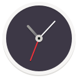

Hello! I'm another person that makes stuff
I'm a member of the GNOME Foundation and a Human Being^
Projects
Since 2018 I've maintained Dia (or at least claim to), a cross-platform diagram editor
 |
Dia |
| Dia is a program for drawing diagrams |
Along with Bilal Elmoussaoui I co-maintain Clocks, one of GNOME's "Core Apps".
|  | Clocks |
| Clocks for world times, plus alarms, stopwatch and a timer |
I've contributed to Mu, a great editor for Python with built-in support for the micro:bit and other MicroPython devices
 |
Mu |
| A simple Python editor for beginner programmers |
King’s Cross is a simple terminal emulator (using vte) shipped as a default app on the Librem 5
 |
King’s Cross |
| Simple Terminal |
App Icon Preview is the latest iteration on my “icon-tool” which led to the GNOME Design Tooling initiative aiming to make life easier for designers working with the GNOME platform. Now mostly maintained by others it’s available on flathub
| App Icon Preview | |
| App Icon Preview is a tool for designing icons which target the GNOME desktop |
Colour Palette is a very simple app(let?) that provides hex codes for the GNOME HIG colour palette. On flathub
 |
Colour Palette |
| Tool for viewing the GNOME color palette as defined by the design guidelines |
Aqabler is an implementation of AQA assembly allowing students to actually 'run' assembly complete with a web interface
 |
Aqabler |
| Play with AQA Assembly code |
I help “translate” GNOME into British English
| British English Translation Team | |
| Damned Lies Translation Platform |
And many other things I've forgotten about
Things I'm mentioned in
- Made With Mu: Contributor Focus: Zander Brown
- Softpedia: GNOME 3.32 Desktop Environment to Launch with a "Radical New Icon Style"